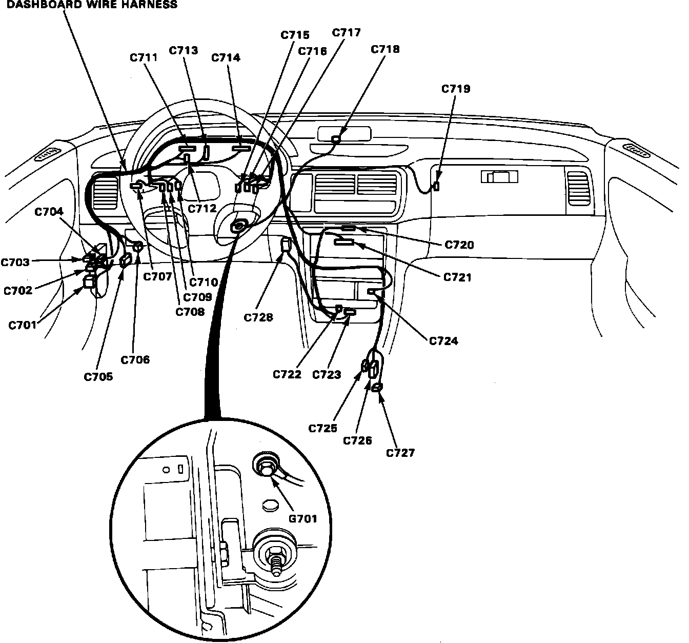

Operation CHARM
: Car repair manuals for everyone.
Home
>>
Acura
>>
1992
>>
Integra L4-1834cc 1.8L DOHC FI
>>
Repair and Diagnosis
>>
Body and Frame
>>
Interior Moulding / Trim
>>
Dashboard / Instrument Panel
>>
Locations
Dashboard / Instrument Panel: Locations
Dashboard:
